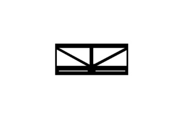
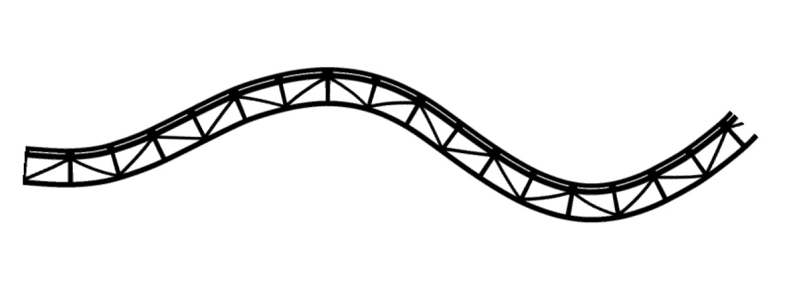
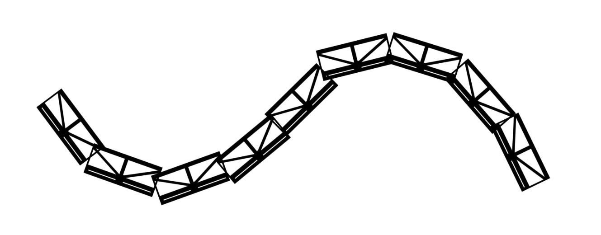
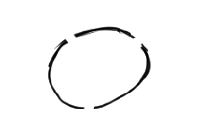

Tips & Tricks
- Clip Studio Paint
Here are some cool things Clip Studio Paint can do that Photoshop can't (that I use a lot!):
- Ribbon brushes
You can make a pattern warp to follow your brush path.

Stamp Texture

Clip Studio Ribbon Brush

Photoshop Brush
- limited color palette
Useful for pixel art
- Lasso select across multiple layers and move that selection
- Bucket fill line art that has gaps

Lineart with gaps
- CSP can open .psd files! So you can somewhat switch between the programs (some functionality breaks).
- CSP offers a perpetual license on PC - not on mobile though :(
- Photoshop
- There are two types of timeline, one with a set frame rate and another with a variable framerate which is useful for gifs.
- Krita
- Comes with a shortcut to flip the canvas horizontally by default and it doesn't lag horrifically like
photoshop does when it does it.
Assets
www.gifcities.org
www.pinterest.com/wazwer
- My pinterest where you'll find sources for any moodboards I've made (I know pinterest sucks with all the
censorship and AI spam, I'm looking for a good alternative)
www.pixabay.com
www.freesound.org
Tools/Widgets
www.webamp.org
WinAmp on the web
www.flat2d.com/pc98.html
Cool software and a cool archive of PC-98 art
www.povray.org
Useful (though kinda obstuse) for making crusty looking renders in Blender.
www.skissors.github.io/PetzPark
Adorable Petz widget, one of my childhood favourite games.